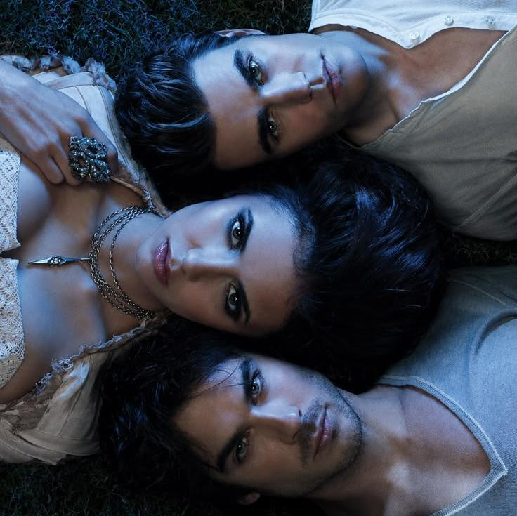

С чего всё начиналось
В маленьком городке Мистик Фоллс, окутанном тайнами и легендами, разворачивается история, которая изменит судьбы многих поколений.
Шестнадцатилетняя Елена Гилберт переживает тяжёлую потерю — в автомобильной катастрофе погибают её родители. Девушка пытается вернуться к обычной жизни, не подозревая, что её судьба уже предрешена.
В школе появляется загадочный новенький — Стефан Сальваторе. Красивый, задумчивый, с вековой тайной в глазах. Он — вампир, которому уже 162 года. Между Еленой и Стефаном вспыхивает чувство, но у Стефана есть брат — Дэймон, который возвращается в город спустя десятилетия, и его чувства к Елене окажутся не менее сильными.
Так начинается история любви, предательства, дружбы и борьбы между светом и тьмой, которая продлится восемь сезонов и затронет жизни ведьм, оборотней, гибридов и древних вампиров — Первоисточников.
